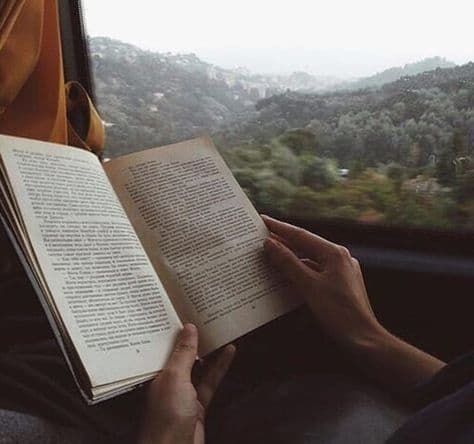
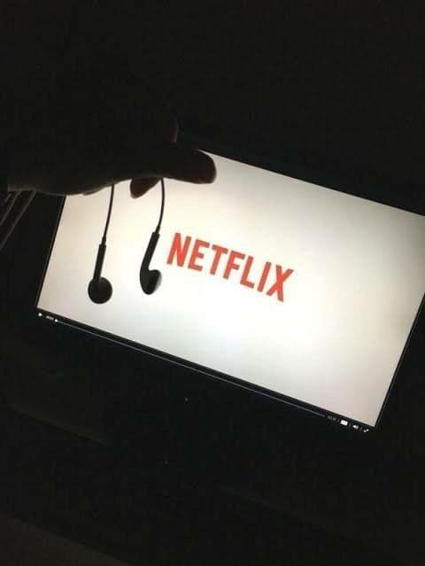
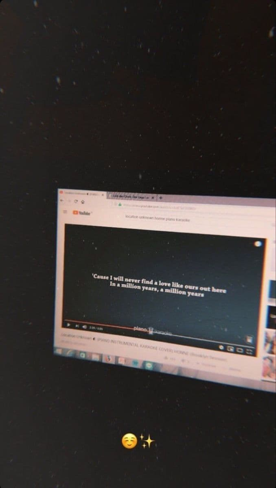

MY HOBBIES


Here are my hobbies during my leisure time.
In my opinion, for brief moments of time, books release us from the constraints of our own reality. They take us beyond our world and into someone else’s real or imaginary one.
I'm into comedy, romance and drama these day. On watching a movie, we laugh, cry and are also filled with other emotions such us adventurousness or fear. Watching a movie provides us with an opportunity to express our emotions.
I love listening music intrumental especially piano. Music is such an important part of life. Throughout my life when I have been happy, sad, or wanting to just spend time on my own to get things done music has always been the answer. Music is all around us; while driving, eating at a restaurant, and anywhere. A life without music is not truly a full life at all.
